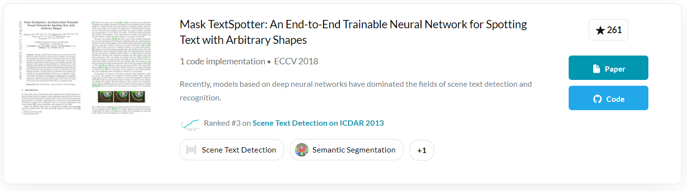
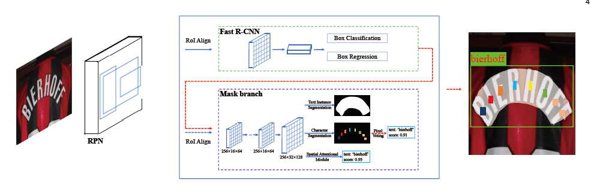
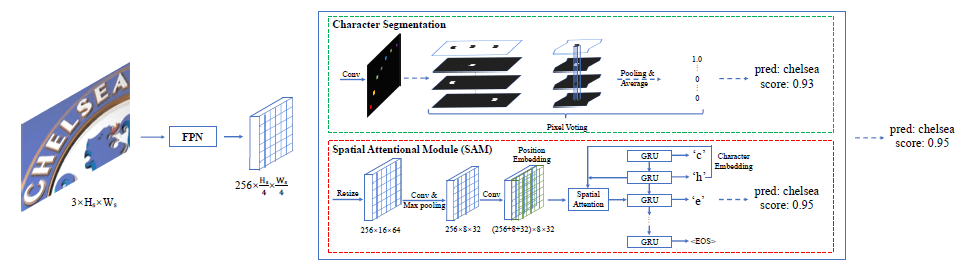
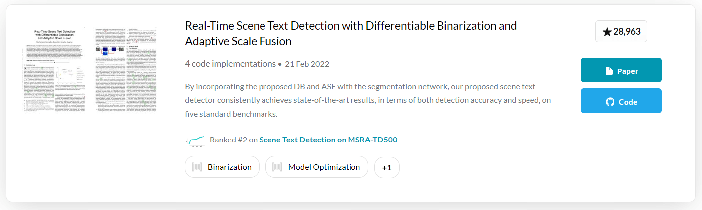
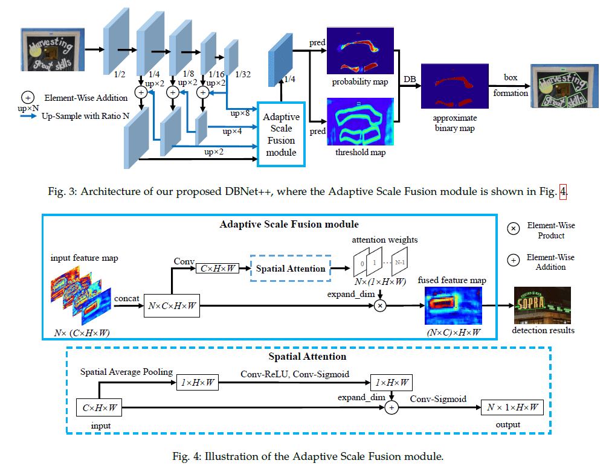
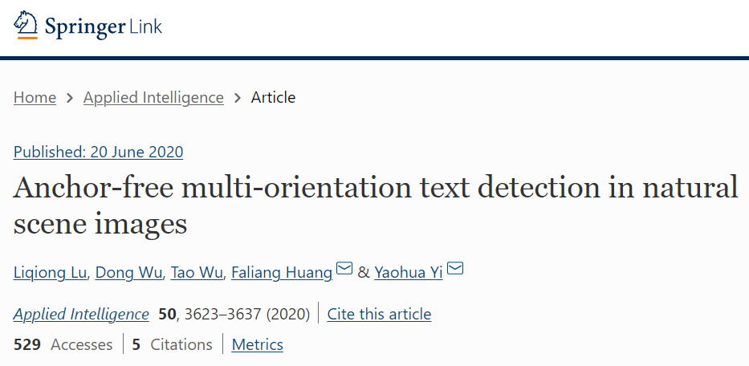
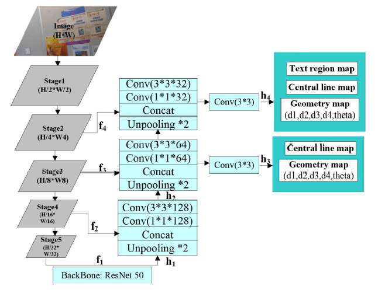

Paper-这两天看的Text Detection的论文
在收集完期刊和会议的论文目录后，于 3.20-3.21 挑了三篇有关 Text Detection 的论文看了看。
Mask TextSpotter - An End-to-End Trainable v1

Mask TextSpotter 在 paperwithcode 上居然有三个版本……看来是个很高级的东西了。
提出了一个端到端模型，分为两个子模型：
- 提取文本实例的检测网络
- 预测每个文本实例的顺序标签的 seq2seq 网络
亮点：
- 用实例分割来解决文本检测问题，使它可以检测任意形状的文本
- 对规则和不规则文本都具有较强的通用性
- 可以检测水平、定向、弯曲文本
- 训练方法简单流畅
- 好使
模型结构：

Mask TextSpotter 的灵感来自于 R-CNN，分成四个部分：
- 作为骨干的特征金字塔网络（FPN）
- 从单一尺度输入中融合不同分辨率的特征，以边际成本提高精度
- 生成文本建议的区域建议网络（RPN）
- 为后续的 Fast R-CNN 和 mask branch 生成文本建议，分配锚点
- 输出用于文本实例分割的映射 和 用于字符语义分割的字符映射
- 边界盒回归的快速 R-CNN
- 包含分类任务和回归任务
- 用于文本实例分割、字符分割和文本识别的 mask branch
- 检测和识别任意形状的文本
- 文本实例分割
- 字符分割
- 文本序列分割
- 检测和识别任意形状的文本
文字识别输出的 37 个类（英文字母和数字共 36 个，背景 1 个，这对中文识别好不好使啊？）
mask branch 的设计是论文的亮点，文章又详细介绍了 mask branch 的结构：

分为两个模块：
- Character Segmentation
- Spatial Attentional Module（SAM）
- 空间注意力模块：引入了注意力机制
两个模块都可以提供识别结构和置信度分数。选择最高的作为最终识别结果。
设计了多任务损失函数：
总流程：
输入测试图像-获取 Fast R-CNN 的输出-通过 NMS 过滤掉冗余候选框-到 mask branch 中生成 文本实例映射、字符映射、文本序列
经过实验后非常好使！
Real-Time Scene Text Detection with Differentiable Binarization and Adaptive Scale Fusion

Star 数如此之多……看来很牛逼
基于分割的场景文本检测算法。简介中得知图像分割的任务大都采用 特征金字塔 或 U-Net 结构来融合不同比例尺的特征图，从而提高了分割网络的比例尺的鲁棒性。
文本检测算法有三种：
- 基于回归
- 基于部分
- 基于分割
亮点：
提出了一个可微二值化模块（DB）——将二值化过程集成到一个分割网络中
- 传统阈值化：$B_{i,j}=\left\{\begin{matrix}1\ \mathrm{if}\ P_{i,j}\ge t,\\0\ \mathrm{otherwise.}\end{matrix}\right.$
- 可微阈值化：$\hat B_{i,j}=\frac{1}{1+e^{-k(P_{i,j}-T_{i,j})}}$
- 然后就一堆数学公式 orz 看晕了
一种高效的自适应尺度融合模块（ASF）——通过自适应融合不同尺度的特征来提高尺度的鲁棒性
- 看样子用了点注意力机制
提出的模型叫 DBNet++，是他们之前提出 DBNet 的扩展。

实验的时候跟上一篇一样用了合成数据集，然后进行使用了数据增强手段：
- 随机旋转
- 随机裁剪
- 随机翻转
实验后发现很好使！但是不好处理“文本中文本”的问题。
Anchor-free multi-orientation text detection in natural scene images

这是一个 C 类的期刊。我发现 C 类的期刊明显知名度低，很多论文不好找到原文，而且找不到代码复现……
自然场景图像中无锚多方向文本检测。亮点是检测小规模文本比较好使？
- 利用特征金字塔（FPN）结合 CNN 的多个预测层来预测文本的几何属性
- 设计了一种新的与文本尺度无关的损失函数，使小尺度文本的像素具有更大的权值
CNN-based text detection in natural scene images
- 基于区域文本检测方法
- 把文本框在一个区域里
- 基于语义分割的文本检测方法
- 混合文本检测方法
对无锚文本检测的著名模型 EAST 进行改进，EAST 对小尺度文本不好使，我好使。
- 融合 FCN 与 FPN
- 增加损失函数
- 增加过滤机制
- 使用与 EAST 中相同的 NMS 算法对重复框进行过滤

使用 Tensorflow 和 GTX 1080 进行训练（在 2020 年里会不会有点落后？），使用 SGD 作为优化方法。
对标 EAST，我比它好使。
但是当句子特别长且句子中的字符间隔较大时，不太好使。
对弯曲文本也不好使啊，他也提到了应该加入注意力机制和语义分割的。